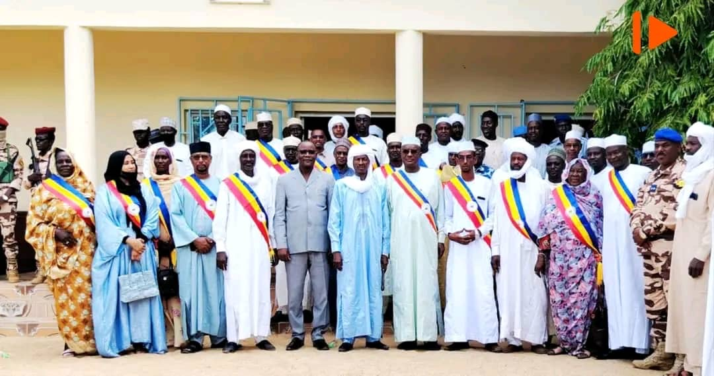

Présentation du Conseil Provincial du Batha
Le Conseil Provincial du Batha est une institution publique chargée de représenter et de défendre les intérêts des populations de la province du Batha. Il constitue un cadre de concertation et de prise de décisions pour le développement local.
Basé à Ati, le Conseil agit en collaboration avec les autorités administratives, les collectivités territoriales, les partenaires techniques et financiers, ainsi que les organisations de la société civile.
Son action repose sur la transparence, la responsabilité et la participation citoyenne afin d’assurer un développement équilibré et durable dans l’ensemble de la province.

La voix du peuple, l'action pour le Batha. Ensemble construisons l'avenir.